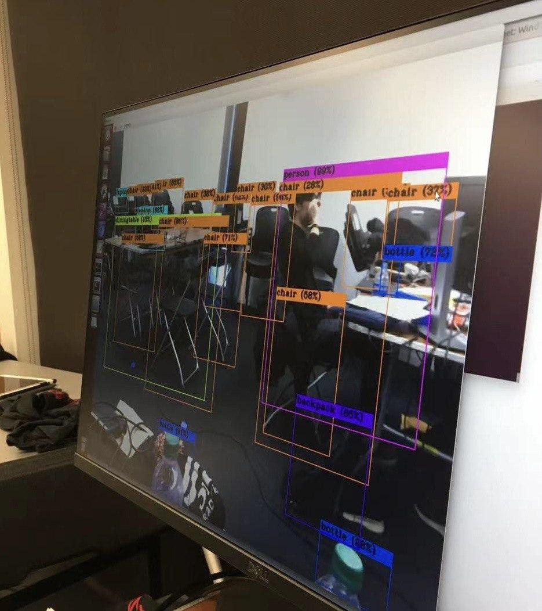
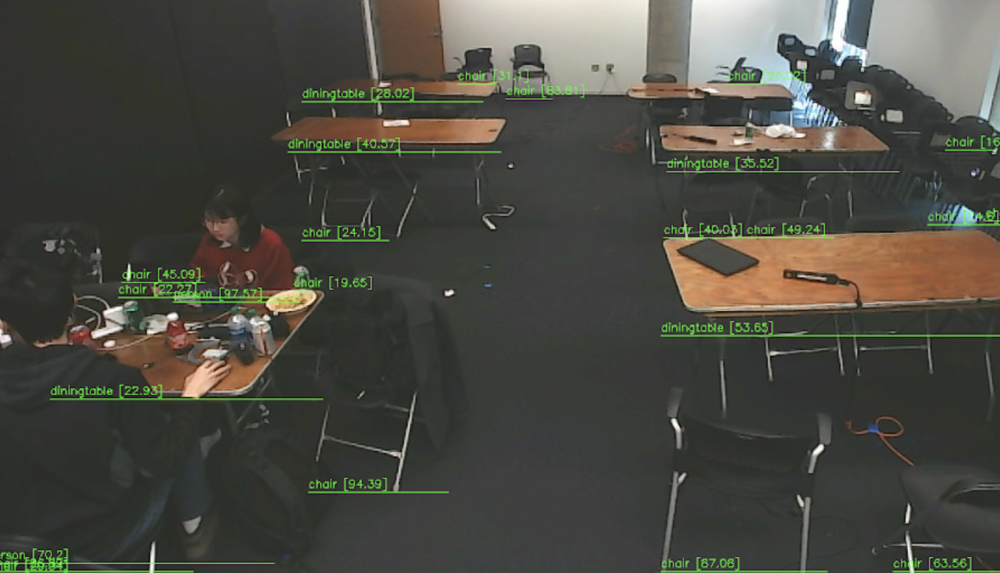

2020 MakeOHI/O Competition
Visual Solution for Indoor Location Tracking
Voice over presentation of this project at Honda 99P Lab; Slides for presentation of this project;
 
Award: Championship of Honda Challenge
MakeOHI/O Competition is an annual 24-hours makeathon competition held by the Ohio State University.
In 2020, more than 150 undergraduate and graduate students joined this compeittion.
I led a team of three to
compete in the
Honda Challenge in this competition. The topic of this challenge is:
Build an IoT system to track the movement,
arrangement and utilization of 99P Labs resources.
Understand what it takes for your indoor location tracking system to be low cost and scalable.
Different from other teams who participated in this challenge who used traditional IoT development kits,
we proposed a visual solution to this IoT problem. We used a monocular camera and attached it to an one DoF linkage. We attached the linkage
to a wall and processed image data from the camera using a Jetson Nano. Based on the calibrated images from recitification and transformation
of raw inputs, we applied Yolo V3 to recognize objects that we were interested in, and drew bounding boxes to determine the region of interest.
Based on the coordinates of the bounding boxes, we were able
to estimate the location of an object in the environment. We then divide the environment into some areas, and plot the
heat map of different objects in a specific time period.
We won 1st place in this Challenge, and we were
invited to give a presentation of our project to the Honda 99P Lab located at Columbus, Ohio.